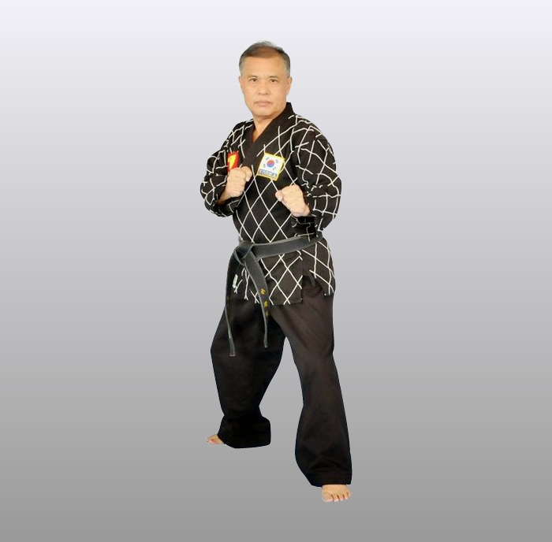

Grão-Mestre Yun Sik Kim
Um breve histórico do Grão-Mestre YUN SIK KIM - Criador do estilo Bum Moo HAPKIDO.
Responsável pelo crescimento e desenvolvimento do Hapkido Brasileiro.

- Nasceu em 05 de Junho de 1943 - Seul, capital da República da Coréia do Sul
- Em 1954 - Começa a treinar Taekwon-do e HAPKIDO.
- 1957 - Recebe o diploma de faixa preta primeiro dan de HAPKIDO das mãos do mestre Young Sul Choi.
- 1965 - Inaugura primeira academia, em SeuI, Coréia.
- 1968 - Fundação do seu próprio estilo denominado Bum Moo Kwan HAPKIDO, juntamente com a World Bum Moo Kwan HAPKIDO Federation.
- 1977 - chega ao Brasil, onde começou a ministrar aulas de Taekwondo e HAPKIDO, na Rua Pretória na Vila Formosa - Tatuapé - SP.
- 1981 - Funda a Associação Kim Taewkondo e HAPKIDO Club, situada Praça João Mendes, 183 - 3º andar, esquina com Av. Liberdade - Centro - SP.
- 1982 - Recebe o trofeu “PRO TAEKWONDO KOREA” e o diploma internacional de faixa preta 8º dan pela associação KIDO- A poderosa organização Coreana que controla todas as Atividades de artes marciais daquele país.
- 1985 - Vice- presidente da associação dos mestres coreanos de TAEKWONDO no Brasil.
- 1986 - Recebe os diplomas de faixa preta 8º dan internacional de TAEKWONDO e e 9º dan em HAPKIDO. No mesmo ano recebe o diploma de 1º lugar na demonstração nacional de artes marciais realizada em Manaus. E ainda em 1986 é condecorado pela legião de honra Giuseppe Garibaldi, RS, com a Grão-Cruz e colar da legião.
- 1990 - realiza a primeira competição de hapkido no Brasil – I Campeonato Brasileiro de Hapkido
- 1990 - funda a Federação de Hapkido do Estado de São Paulo.
- Em 2000 - YUN SIK KIM era o 4º Grão-Mestre a alcançar o 10º Dan de HAPKIDO no mundo.
- 2001 - Fundou a Confederação Brasileira de Hapkido, sendo eleito presidente.
- Atualmente ministra aulas (pessoalmente) na Rua da Graça, 89 – Tiradentes – São Paulo-SP.
- Mais informações em: https://pt.wikipedia.org/wiki/Yun_Sik_Kim


Copyright © 2016 Federação Baiana de Hapkido
Todos os direitos reservados
Todos os direitos reservados